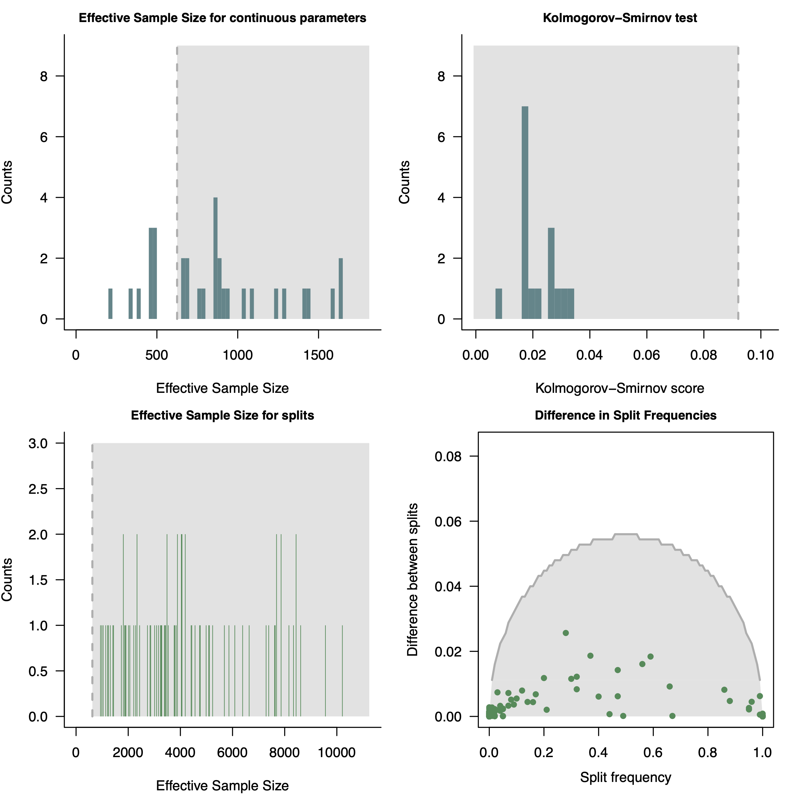
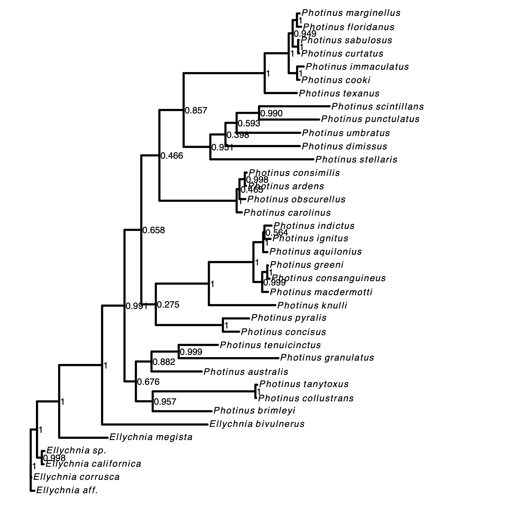

The data used in this exercise is a single gene, COI, for the North American firefly genus photinus (photinus_COI.fas). We will use the standard substitution model (the GTR + $\Gamma$ model) for phylogeny inference. If you want, you can also use a different locus. More details about the analysis can be found in the CTMC tutorial.
First, we need to create a script for the unrooted phylogeny analysis.
Create a new Rev script and call it MCMC_unrooted_photinus_COI.Rev.
Let’s start with writing the script for this analysis. We are going to be brief in the explanation as more details are already given in the CTMC tutorial.
First, read in the sequence data.
### Read in sequence data for the gene
data = readDiscreteCharacterData( "data/photinus_COI.fas" )
Then, obtain some useful variable, such as the number of taxa and number of branches.
# Get some useful variables from the data. We need these later on.
num_taxa <- data.ntaxa()
num_branches <- 2 * num_taxa - 3
taxa <- data.taxa()
As usual in RevBayes, we need to create our vector of moves and monitors.
moves = VectorMoves()
monitors = VectorMonitors()
The next step in our model setup is the substitution model. We will specify a common GTR + $\Gamma$ substitution model, as suggest by Höhna et al. (2017) and Fabreti and Höhna (2023).
First, we specify the stationary frequency parameters drawn from a flat Dirichlet distribution, together with moves working on them (the first changing only one frequency and rescaling the others, the second changing all frequencies).
pi_prior <- v(1,1,1,1)
pi ~ dnDirichlet(pi_prior)
moves.append( mvBetaSimplex(pi, weight=2.0) )
moves.append( mvDirichletSimplex(pi, weight=1.0) )
Second, we specify the exchangeability rate parameters also drawn from a flat Dirichlet distribution, together with the two appropriate moves.
er_prior <- v(1,1,1,1,1,1)
er ~ dnDirichlet(er_prior)
moves.append( mvBetaSimplex(er, weight=3.0) )
moves.append( mvDirichletSimplex(er, weight=1.5) )
Then, we can create a deterministic variable for the rate matrix, Q
Q := fnGTR(er,pi)
We also model among site rate variation using a dicretized $\Gamma$ distribution with four categories (Yang 1994). Our prior on the $\alpha$ parameter of the $\Gamma$ distribution will be a uniform prior as this prior was shown to collapse best to a model without rate variation Fabreti and Höhna (2023). Note that is very helpful to initial $\alpha$ with a value of 1.0.
alpha ~ dnUniform( 0, 1E8 )
alpha.setValue(1.0)
sr := fnDiscretizeGamma( alpha, alpha, 4, false )
moves.append( mvScale(alpha, weight=2.0) )
The next step in our model is to specify the prior on the phylogeny.
We will use a joint prior on both the branch lenghts and topology, dnUniformTopologyBranchLength.
The topology will receive a uniform prior while we use and exponential prior on the branch lengths.
# hyper-prior for the
branch_length_lambda <- 10.0
# Prior distribution on the tree topology and branch lengths
psi ~ dnUniformTopologyBranchLength(taxa, branchLengthDistribution=dnExponential(branch_length_lambda))
Next, we specify some common moves on the tree topology and branch lengths.
moves.append( mvNNI(psi, weight=num_taxa) )
moves.append( mvSPR(psi, weight=num_taxa/5.0) )
moves.append( mvBranchLengthScale(psi, weight=num_branches*2) )
TL := psi.treeLength()
As usual, we specify a dnPhyloCTMC distribution to model our molecular sequence evolution.
This corresponds to the standard phylogenetic likelihood.
# the sequence evolution model
seq ~ dnPhyloCTMC(tree=psi, Q=Q, siteRates=sr, type="DNA")
Now, attach the observed data to this variables
seq.clamp(data)
First, you must create a combined model object with all variables together.
mymodel = model(psi)
Then, specify the variables that are monitored and to which files these will be written.
# add monitors
monitors.append( mnScreen(alpha, TL, printgen=100) )
monitors.append( mnFile(psi, filename="output/photinus_COI.trees", printgen=1) )
monitors.append( mnModel(filename="output/photinus_COI.log", printgen=1) )
Finally, set up an MCMC object with two replicates and run the MCMC simulation for 25,000 iterations. This should be enough for this small dataset, but maybe 50,000 or 100,000 are required for larger datasets and more complex models.
# run the analysis
mymcmc = mcmc(mymodel, moves, monitors, nruns=2, combine="mixed")
mymcmc.run(generations=25000, tuningInterval=100)
At the end of the analysis, construct the tree summary as the maximum a posterior tree.
treetrace = readTreeTrace("output/photinus_COI.trees", treetype="non-clock")
map_tree = mapTree(treetrace,"output/photinus_COI_MAP.tre")
Run your MCMC analysis!
⇨ The Rev file for performing this analysis: mcmc_unrooted_gene_tree.Rev
Let us first look at convergence of this analysis.
Just start R in the main directory for this analysis and then type the following commands:
library(convenience)
# Analysis settings
N_REPS = 2
LOCUS = "COI"
treefile_names = paste0("output/photinus_",LOCUS,"_run_",1:N_REPS,".trees")
logfile_names = paste0("output/photinus_",LOCUS,"_run_",1:N_REPS,".log")
format = "revbayes"
conv.control = makeControl( tracer = NULL,
burnin = 0.2,
precision = NULL,
namesToExclude = NULL
)
check_conv <- checkConvergence( list_files = c(logfile_names, treefile_names ),
control = conv.control,
format=format )
pdf( paste0("convergence_unrooted_",LOCUS,".pdf"), height=8, width=8 )
par(mfrow=c(2,2))
plotEssContinuous(check_conv)
plotKS(check_conv)
plotEssSplits(check_conv)
plotDiffSplits(check_conv)
dev.off()

convenience (Fabreti and Höhna 2022). For more information see RevGadget tutorialNext, we plot the MAP tree and inspect it.
library(ggtree)
library(RevGadgets)
LOCUS = "COI"
tree <- readTrees(paths = paste0("output/photinus_",LOCUS,"_MAP.tre"))
plot <- plotTree(tree = tree ,
timeline = F,
node_labels = "posterior",
node_labels_offset = 0.005,
tip_labels_italics = T,
tip_labels_remove_underscore = T,
node_pp = !T)
ggsave(plot, file=paste0("unrooted_",LOCUS,".pdf"))

RevGadgets (Tribble et al. 2022). For more information see RevGadget tutorial.Above we have seen how to infer the posterior distribution of gene trees. Now, after your have run this analysis, try to run the same analysis for different genes as well as a concatenated analysis of all genes.
Run your MCMC analysis!
Click below to begin the next exercise!